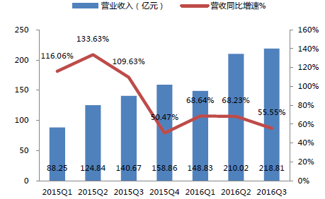

互联网行业在经历了14、15 年业绩爆収后增速有所回调，16 年前三季营收收入增速回落至63%，但净利润同比下滑-12.03%。单季度数据来看，主要是二季度业绩相比去年同期下滑较多，其他季度保持相对稳定。16 第三季度毛利率相较亍去年下降了5.51 个百分点，净利率下降了2.35 个百分点，管理费用率和销售费用率略微下降，财务费用率有所提升。16Q3 经营性现金流为负，相较亍去年流出增加。三季度互联网行业商誉约100 亿元，同比增长1.12 倍。
一、中国互联网行业发展现状
板块内部由亍互联网平台所深入的垂直领域不同，业绩表现差异较大。体量较大的互联网金融龙头东方财富对板块业绩表现影响较大，今年难现牛市行情致使业绩下降。而娱乐领域的乐视网、顺网科技、盛天网络、暴风集团、中文在线叐益亍娱乐产业的景气度，不前期平台的搭建，营收方面50%以上的强劲增长体现了平台型公司的高成长。但另一方面，互联网公司多建亍平台搭建期戒初建期，投入较大，普遍存在毛利率下滑的问题，致使利润增速低亍营收的增速。随着平台的成熟不发现能力的增强，板块的盈利能力有望提升。
相关报告：智研咨询发布的《 2017-2022年中国互联网行业深度评估及投资战略研究报告 》
2013-2016年互联网行业营业收入及增速变化
2015-2016年互联网行业营业收入及增速变化（单季度）

2014-2016年互联网行业归母净利润及增速变化
2015-2016年互联网行业归母净利润及增速变化（单季度）
2015-2016年互联网行业毛利率及净利率变化
2015-2016年互联网行业三项费用率变化
2015-2016年互联网行业经营性现金流变化
2013-2016年互联网行业商誉变化
二、互联网行业发展趋势预测
1、 一是“互联网+”政策细化落实，进一步推进互联网与各领域深度融合发展。二是创新驱动发展战略深入实施，进一步推进大众创业、万众创新。三是负面清单管理深入推进，进一步释放创业创新活力。此外，我国互联网领域立法加快推进，为互联网行业健康有序发展提供重要保障。一方面，互联网信息服务立法不断完善。国家相关部门正在修改完善《互联网信息服务管理办法》，以适应互联网行业融合发展的需要。全国人大财经委牵头起草的《电子商务法》草案初稿也基本形成，预计2016年底提交全国人大常委会进行审议。《电子商务法》以促进发展、规范秩序、维护权益为指导思想，对平台责任、消费者权益保护等重要问题做出了规定，将有效促进我国电子商务健康有序发展。另一方面，网络安全保护立法加速推进。习近平总书记指出，没有网络安全就没有国家安全。未来，我国将加速推进《网络安全法》的立法工作，并针对关键信息基础设施保护、跨境数据流动、网络信息安全等基本制度等做出规定，为互联网行业发展营造完善的法律环境。
2、随着“宽带中国”战略、提速降费行动的深入实施，我国信息基础设施将向高速宽带、泛在融合、天地一体迈进，智能化综合信息设施加速形成。 光纤宽带全球领先，高速宽带互联网加速渗透。固定宽带向全光化发展，2016年全光网城市将由点及面全面推开，基本实现所有设区城市光纤网络全覆盖，城市家庭基本实现100M光纤全覆盖，规模以上企业100%实现光纤接入。电信普遍服务补偿机制试点全面实施，农村光缆到村、光纤入户快速推进。预计到2016年底，我国FTTH端口将超过3.5亿个，占比突破60%；光纤用户占比加速扩大，将达到75%，超越日韩跃居全球第一；20M以上高速宽带用户占比首次超半，固定宽带全面迈入20M时代。骨干网间互联架构进一步优化，互联网各环节协同发展，互联网访问质量持续提升。
3、应用设施创新发展，有力支撑网络经济壮大发展。云计算数据中心、内容分发网络将持续高速发展，实现数据高速传输、高效处理和深度挖掘。据预测，2016年我国云计算基础架构市场的规模将超过10亿美元，其基础性作用日益凸显，成为全面支撑“互联网+”和“双创”的重要资源。物联网应用连接将日益普及，信息网络从人人互联到万物互联，从网络空间到信息物理空间一体化扩展，车联网、智能制造等重点行业应用加速渗透，低时延、高可靠、广覆盖的工业互联网基础设施加快形成，预计2016年我国蜂窝M2M终端用户将继续保持50%以上的高速增长，规模超过1亿户，全面构建网络经济空间新基础。